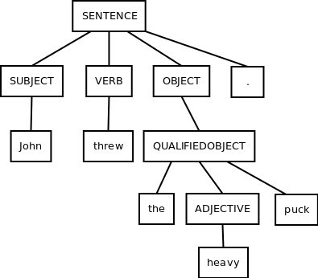
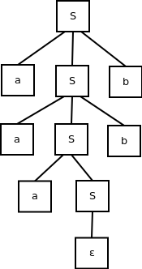

We've now seen how we can derive strings that belong to some language using a context-free grammar. One of the next questions you might ask about such a derivation is "What does this mean?"
Definition
A parse tree is a structure that illustrates the structure of a string as part of a language. In particular, a parse tree illustrates, in a recursive structure, what a nonterminal symbol produces within a particular string's derivation via the rules in a grammar.
Example
Let's say we are examining the language specified by the following context-free grammar:
SENTENCE → SUBJECT VERB OBJECT.
SUBJECT → John | Jane
VERB → threw | kicked
OBJECT → DIRECTOBJECT | QUALIFIEDOBJECT
DIRECTOBJECT → the ball | the puck
QUALIFIEDOBJECT → the ADJECTIVE ball | the ADJECTIVE puck
ADJECTIVE → big | heavy
Example derivation:
Based on this, we know that the sentence "John threw the heavy puck." is part of our language. But what does it mean?
The following parse tree represents our string derivation:
We can learn the following from seeing a parse tree for a string (without requiring any external information):
Example
Let's say we have the following context-free grammar:
S → aSb
S → aS
S → ε
By inspection, it's not to hard to understand that this CFG specifies the following language:
L = {an + kbn | n, k >= 0}
Informally, this language contains the empty string, plus some number of as following by some number of bs where there are at least as many as as bs.
Deriving a string:
From this derivation, we know that aaabb ∈ L. The corresponding parse tree is:
From this parse tree, we can tell that, in our derivation, we chose to introduce the unbalanced "a" symbol deep within the structure of our derivation. It can use used here to remove ambiguity from the meaning of our input string.
We can use parse trees to ilustrate the structure and hence the meaning of an input string within our language.
GitHub Repository: https://github.com/bprollinson/ripal
Copyright © 2017 Brendan Rollinson-Lorimer